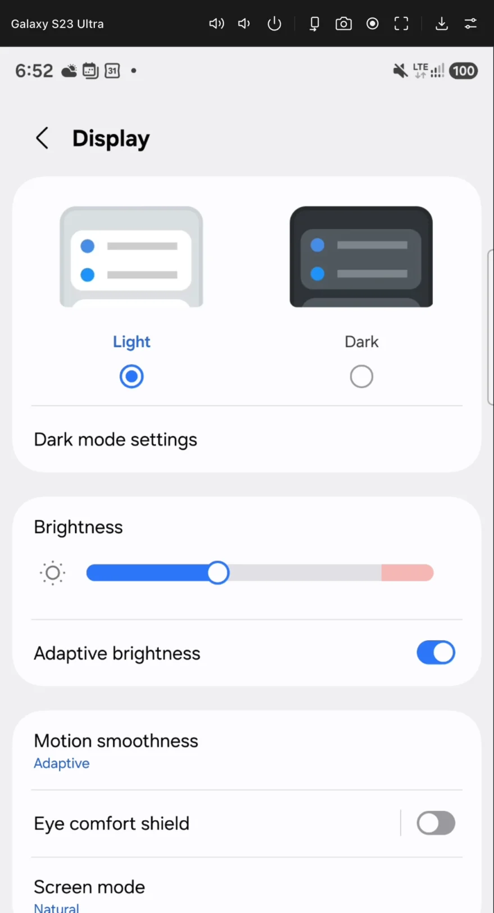

Una ventana por dispositivo
Abre varios teléfonos a la vez, cada uno con su barra y su navegación.
Galaxy S23 Ultra conectado por USB
Ve y controla tu teléfono desde macOS, Windows o Linux con mouse y teclado. Captura y graba lo que pasa mientras pruebas. Por USB, o por Wi-Fi con un código QR.
Para Android. iOS próximamente.

Ves la pantalla, la controlas y guardas lo que pasa. Sin instalar ninguna app en el teléfono.
Abre varios teléfonos a la vez, cada uno con su barra y su navegación.
Sin cable ni direcciones IP: escanea el código desde Depuración inalámbrica.
Desde la barra o con atajos. Graba en video o en GIF, y elige si cada captura se muestra, se copia o se guarda.
Toques, multitouch, arrastre, rueda y teclado con acentos.
Arrastra el archivo a la ventana.
Preajustes, resolución, velocidad de datos y códec.
Sigue el tema del sistema. En español e inglés.
Lo que ves y escribes se queda entre tu equipo y tu teléfono.
Descarga el instalador de tu sistema. Aún no está firmado, así que la primera vez macOS y Windows te piden confirmar.
En el teléfono: Opciones de desarrollador → Depuración USB. Si falta adb, la app te ofrece descargarlo.
Por cable, o por Wi-Fi escaneando un QR. Haz doble clic en el dispositivo para abrir su ventana.
$ adb devices List of devices attached 38211FDJH00XYZ device 192.168.1.42:5555 device # Masaya los ve igual: ● Pixel 8 USB duplicando ● Galaxy S24 Wi-Fi duplicando
PróximamenteiPhone y iPad. El soporte para iOS está en camino. Por ahora, Masaya funciona con Android.
Los instaladores aún no están firmados, así que el sistema pide confirmación una sola vez.
En Windows y Linux, ⌘ es Ctrl y ⇧ es Shift.
| Característica | Masaya | Vysor gratis |
|---|---|---|
| Wi-Fi | Incluido | Solo en Pro |
| Calidad | Ajustable, hasta 2560 px | Limitada; HD en Pro |
| Anuncios | Ninguno | Sí; se quitan con Pro |
| Planes | Sin funciones bloqueadas | Pro de pago |
Pulsa «Descargar platform-tools» e instálalo, o elige el adb que ya tienes con «Elegir adb…». Luego pulsa «Reintentar».
Desbloquea el teléfono y acepta el aviso «¿Permitir depuración USB?». Marca «Permitir siempre desde este equipo» para no repetirlo.
Todavía no. El soporte para iPhone y iPad (iOS) está en camino. Por ahora, Masaya funciona con teléfonos y tablets Android.
No. Puedes vincular por Wi-Fi escaneando un código QR. El teléfono y el equipo deben estar en la misma red.
No. Tu pantalla, tus capturas y lo que escribes se quedan entre tu equipo y tu teléfono. La app solo se conecta a internet para consultar en GitHub si hay una versión nueva, y esa consulta no incluye tus datos.